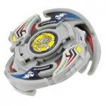

Driger V2
Note: Since this article was published, significant new and more accurate information has come to light, and as a result, this article must be updated. Please do not take all of the information here as the truth, as more extensive testing on the parts of this Beyblade has since provided information which conflicts with and/or expands upon the understanding of these parts this article was based upon. Updates will be posted on the main page when completed.
| Driger Vulcan 2 | |
|  | |
| Number: | A-75 |
|---|---|
| System: | 5-Layer/Magnecore |
| Type: | Balance |
Contents
Mold Differences
There are two molds of both the Attack Ring and Support Parts, the later molds (used in all Hasbro releases as well as later Takara releases, including the Red Version) are reinforced, with extra plastic under the outer edge of the AR and the at beginning of the slopes of the SP, connecting them to the base. Generally, the second mold parts are preferred, as they are less prone to breakage. There is also a mold of the Blade Base with a completely sharp metal tip, though it is quite rare.
The Hasbro version also features darker decals.
Attack Ring (AR): Upper Claw
- Weight: 7 grams
The Attack Ring of Driger V2 consists of two tiger heads, followed by long slopes that reach down to the level of the weight disk, consistent with the desired properties for Upper Attack.
The tiger heads are quite large and sometimes obstruct the slopes, reducing their ability to get under opponents. They also produce some Smash Attack in left spin, but there are a great number of better options. The angle of the slopes change at two points, and this introduces a certain amount of Upward Smash (that is, Smash Attack that hits at an angle from below, smashing, rather than lifting, the opponent upwards). The rather shallow lifting curves, combined with the obstructions, limit the lifting potential of this AR, and by itself is generally outclassed by other Upper Attack ARs.
However, this AR is almost always used in unison with its respective Support Parts, Upper Attack SP, which greatly improve its abilities. When combined, the small gap where the AR and SP meet, as well as the points on the AR where the angle of the slope changes, provide the impacts needed to KO opponents once they have been lifted off the stadium floor.
There is one further limitation of Upper Claw with respect to Upper Attack: it is only effective in Right Spin, unlike Upper Dragoon and Triangle Wing, which have effective slopes in both spin directions.
Due to the limitations of its design as a stand-alone part, this AR should not be used without Upper Attack SP.
Weight Disk (WD): Ten Balance
See Ten Balance
Spin Gear (SG): Neo Right SG (Metal Weight Version)
See Neo Right SG
Support Part (SP): Upper Attack SP
- Weight: 4 grams
As the name indicates, Upper Attack SP hang very low, and have a well shaped slope for lifting opponents. The main use of these SP is in tandem with the Upper Claw AR, where the two line up perfectly, doubling the length of the upper attack slope, and allowing it to begin at a lower height than any Attack Ring. This allows Upper Attack SP to easily get under opposing Beyblades and lift them.
While usually used with Upper Claw, the Upper Attack SP can even be functional by themselves, by using a small Attack Ring such as Polta's Try Cutter and a compact Weight Disk such as 10 Heavy.
The low height of these SP comes at a cost, however. They are well known for scraping along the stadium floor on shorter bases or when launched at a sharp angle, which often must be done to get aggressive movement out of Customize Change Base. As such, it is best to use them with taller bases, although they will still cause scraping issues as the beyblade they are used on loses balance.
These SP can be inverted like many others, but doing so requires a 6 Heavy Weight Disk, and is not particularly useful.
Upper Attack SP are also considered by some to be more useful for Smash Attack than the more popular Fin Tectors. While conventionally used with Upper Claw for Upper Attack, they can be used in Smash Attack customizations to good effect, though one must be very wary of possible scraping issues, as well as obstruction of contact points that may occur due to their large size and round sides.
Use in Upper Attack Customization
Upper Claw and Upper Attack SP work together to provide excellent Upper Attack, and the low starting point of the slopes of Upper Attack SP means that they are able to lift even the lowest of opponents, even on relatively tall bases such as Customize Grip Base. This allows the use of an extremely fast Blade Base and an HMC in the same combination, something which other Upper Attack ARs are unable to do without sacrificing some of their ability to get under opponents.
- AR: Upper Claw (Driger V2)
- WD: Ten Heavy
- SG: Neo Right SG (Heavy Metal Core)
- SP: Upper Attack (Driger V2)
- BB: Customize Grip Base (Dragoon V2)
Ten Heavy and the HMC both maximise the ability to maintain a high RPM, and Customize Grip Base offers good grip and excellent speed, even with a centralised weight distribution, increasing the ability of the AR and SP to knock opponents out after lifting them. This results in a very powerful Upper Attack combination that can be used with great success against a wide variety of opponents.
Blade Base (BB): Customize Change Base
- Weight: 7 grams
Customize Change Base is the updated version of Metal Change Base (Driger S). It still has a similar Metal Change tip that allows it switch modes depending on the angle the tip is shot at, however, Customize Change Base's tip is slightly sharper, resulting in less aggressive movement.
Customize Change Base also weighs 2 grams more, and is compatible with Support Parts, most notably the suitably compact Defense Ring. However, it is also taller, and this increased height means its predecessor is generally preferred for use in Compact customization. However, Customize Change Base is still a good choice, especially if one is put off by the more aggressive movement of Metal Change Base, but still wants the Survival provided by a metal tip.
There is also a rare mold with a completely sharp tip. The increased ability to maintain RPM gives it better Defensive ability. This mold finds good use in defensive Compacts, though one must be wary as using it results in a combination with no Attack ability, limiting the versatility that makes Compact customs so powerful.
Use in Compact Customization
While generally outshone by Metal Change Base, Customize Change Base does still find use in Compacts, though the only suitable support part is Voltaic Ape?s Defense Ring. The less aggressive performance may appeal to some who are put off by the aggressive behaviour of Metal Change Base, but still wish to benefit from the added survival ability of a metal tip. The following is an example of a compact which focuses on the unique abilities of Customize Change Base:
- AR: War Lion (Galeon)
- WD: Ten Heavy
- SG: Neo Right SG (HMC)
- SP: Defense Ring (Voltaic Ape)
- BB: Customize Change Base
Any mold of the base will work well with this customization, though Metal Change Base is generally a better choice than more aggressive variants. War Lion is chosen over other AR options to further focus the Defensive abilities of the customization.
Uncustomized Performance
One thing that Driger V2 is notorious for is its ability to perform extremely well uncustomized. While it is greatly enhanced by the addition of 10 Heavy and a Heavy Metal Core, it is one of the most balanced and powerful uncustomized Beyblades ever released, owing to the great synergy of Upper Claw and Upper Attack SP, a well balanced base, and the decent defensive ability that comes from its relatively heavy weight. Traditionally, the Beyblading community was split between Dranzer V2 or Driger V2 being the best uncustomized Beyblade from the hugely popular V2 series. While there has never been one true answer, an uncustomized Driger V2 is still a viable competitive choice to this day.
Other Versions
- Driger V2 - Fukubako Box 2003 Version (Red)
Gallery
Driger V2 - Original Version (Second Mold)
-
Top view
-
3/4 view
-
Side view - 1
-
Side view - 2
-
Bottom view
-
Upper Claw Attack Ring
-
Upper Attack Support Parts
-
Sticker sheet
Driger V2 - Fukubako Box 2003 Version (Red)
-
Top View
-
3/4 View
-
Bottom View
-
Side View - 1
-
Side View - 2
-
Upper Claw Attack Ring
-
10 Wide Weight Disk
-
Neo Spin Gear - Metal Weight
-
Upper Attack Support Parts Top View
-
Upper Attack Support Parts Top View
-
Customize Change Base
Overall
Driger V2 is famed for its ability to defeat a wide range of opponents with little to no customization. While its parts aren?t extremely powerful individually, they work excellently together, and can be used in a variety of customisations. Driger V2 is a good choice for a first beyblade, and a very useful beyblade to own, albeit not a must-have.